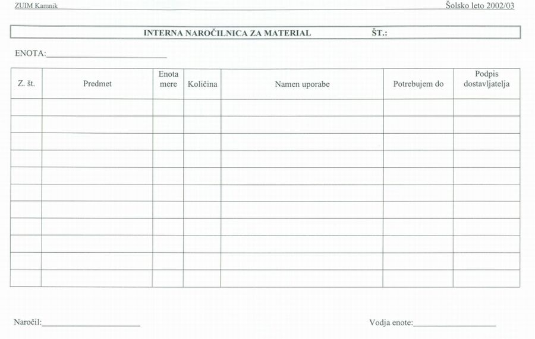

|
Sestavna risba ali sestavnica je dokument, ki predstavlja jedro dokumentacije v naèinu dokumentiranja s strukturirano zgradbo izdelka (glej uèno enoto "STRUKTURIRANA ZGRADBA IZDELKA (32)" Naloga delovne dokumentacije je natanèen opis dogodka, procesa ali predmeta obravnave. Delovni dokumenti vsebujejo vse potrebne podatke, ki enolièno opišejo dogodek: datum, èas, kraj, odgovorne osebe, predmet obravnave. Vsaka organizacija potrebuje za doseganje svojih ciljev tudi potrošne materiale. Potrošni materiali so papir, kartuše, pisala, energija, gorivo. Te pridobiva organizacija od virov in partnerjev v svojem okolju. Kot primer vzemimo ZUIM Kamnik. Cilj te organizacije je opravljanje vzgojno izobraževalne dejavnosti in zdravstvene dejavnosti. Tisti del ZUIM, ki izvaja vzgojno izobraževalno dejavnost, potrebuje za to raèunalnike, projektorje, pisala, papir, kartuše, pa še veliko drugega materiala. Èe potrebuje uèitelj za tiskalnik nove kartuše, mora to sporoèiti tehniški službi ZUIM, ki je zadolžena za nabavo materiala. To stori na posebnem obrazcu. Ta obrazec služi naroèanju novega (potrošnega) materiala. Primer: Uèna podjeta na Srednji šoli ZUIM potrebujejo tri èrne kartuše HP336 in tri barvne kartuše HP342 za tiskalnik HP Deskjet 5440. Nujno morajo namreè natiskati nekaj izvodov katalogov za bližajoèi se sejem uènih podjetij v Celju. Za naroèilo je zadolžen mentor za informatiko profesor. Èeferin. Oglejmo si nekaj podatkov v splošni naroèilnici: 1. Št. naroèila - zaporedna številka naroèila. 2. ENOTA - naziv delovne enote, ki naroèa material. 3. Z. št. - zaporedna številka postavke naroèenega materiala v naroèilnici. 4. Predmet - naziv naroèenega materiala. 5. Enota mere - naèin merjenja kolièine naroèenega blaga (merska enota). 6. Kolièina - mersko število, ki poda kolièino naroèenega materiala. 7. Namen uporabe - kratek opis namena uporabe naroèenega materiala. 8. Potrebujem do - navedemo skrajni rok dostave.  Slika 1: Interna naroèilnica materiala v ZUIM. 1. Vprašanja za usmerjanje pozornosti in usvajanje novih besed: 1. Kako se imenuje obrazec, s pomoèjo katerega naroèi delovna enota ZUIM material, ki ga potrebuje za doseganje svojih ciljev? 2. Naštej podatke, ki jih vsebuje interna naroèilnica materiala v ZUIM. To so rubrike ali stolpci v obrazcu. 3. Naštej podatke, ki jih vsebuje interna naroèilnica ZUIM. To so rubrike ali stolpci v obrazcu. 4. Koliko znaša kolièina naroèenega materiala v primeru iz besedila? 5. Kako se glasi enota mere v primeru iz besedila? 6. Za kateri predmet gre v primeru iz besedila? 7. Kakšen je namen uporabe naroèenega materiala v primeru iz besedila? 2. Zapiši od ene do pet kljuènih besed, ki povzemajo vsebino te uène enote. 3. Vprašanja za razmislek, ponavljanje in povezovanje z lastno izkušnjo: 4. Domaèa naloga: V enem do petih stavkih zapiši, kaj ti je v tej uèni enoti najbolj ostalo v spominu. |